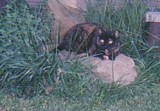

Mommy's mommy came home from work today. Seems someone didn't understand why I called my compared my pooper to a rosebud. Well first of all, I am probably more up close and personal with my anus than most humans (it is a given there are some perverts out there that might rival my abilities to lick my own butt but not too many) I really do feel my shit doesn't stink. Afterall, I save up as long as I can until someone is spending time in the basement, then I unload so they can enjoy the aroma which to me is as sweet as a rose. Everyone should love their excrement as much as I love mine. Wait, there are creatures that love their excrement and that of just about every other creature's on God's green earth, the poop eating hunds of hell. They don't care if it smells of roses or reeks like death, they will roll in it or eat it or both!! So before you even begin to think I am unusual you must stop and think that dogs, not just the ones I am forced to live with, are pretty gross creatures. What is it about them that humans love so much? As intelligent as I am I will never understand that relationship. But I get off subject, my butt is pretty as a little rosebud and smells of rose in my opinion so I can call it anything I like. I do like to show off my "third eye" as well. Nothing pleases mommy more than waking up to have my "third eye" pointed in her direction. Why she is so overwhelmed that she jumps out of bed and tells me to stop that, it is just gross. I am sure the enjoyment she gets from waking to that site is so strong that she says that because she just doesn't know how to express her pleasure. Everyone should have a cat, we as a species, are quite proud of our third eye.
Oh, I think I hear my mommy coming home now. I am sure she will want privacy so I shouldn't linger long here on her pc tonight. God save us all, here she is and with the three mutanteers on her heels. She is mooshing them and making over them and they are snorting like pigs. OH NO, Mommy had Mexican food for supper and she has gas. Totally disgusting, she will fart the room up tonight. Guess I will have to sleep in the rocker. Besides, someone has to watch over all the plants mommy's mommy brought in the house because of the forecasted frost. These plants should be outside and that bothers me so I watch them. I feel that perhaps they are aliens, pod beings if you will, that have invaded my territory and might try to take over. Speaking of taking over, mommy's mommy is growing something in the other room. It is 3 things actually, voodoo lilies. These are the scariest plants she has ever grown. These things are huge and getting bigger. At least they don't just look like snakes anymore, there are a few leaves but these things are still totallyscary. Just did some research and I think they will get bigger still and bloom late summer. Either that or perhaps they will just start eating dachshunds!
Mommy had a pissy, shitty, crappy day at work. Wow, she has been yowling since she found her mommy to yowl at. Mommy's mommy just says she understands, it sucks, there is always WalMart. But at least I got to get in and yowl with them, I love girl talk!
Gotta go, mommy's going on again. Now she is saying she is working to pay for my food and her car. I could give a shit about her car but my food is important. Suck it up mommy and keep on working, I need to be kept in the style I am accustomed. Wheweee, mommy just said one of her coworkers is one ugly person. Two of her coworkers are uglier that pigs' butts, so who knows who she is talking about. OH NO, now mommy is singing Wooly Bully and mooshing me. This is insanity tonight.
Talk another night. Ratty Rules!!!
My Life Is Hell

|
|
Monday, May 03, 2004
posted at 8:21 PMSunday, May 02, 2004
posted at 4:45 PMIt is fuckin' freezin'!!! Geez, I know this is Ohio but the weather needs to make up its mind. Spring or winter and preferably not both in the same day!!! Saturday was beautiful!! Of course, Mommy, the bitch was out and about leaving me home alone. Mommy's mommy was in and out, she couldn't make up her mind if she needed to clean the house or work outside (after an all morning flower shopping spree with Beth the Brutal!) so I decided to slip out the front door and go for a run. Drat! The fat old cow saw me slip out, actually she hit me with the door but I was strong and able to run. She cussed and chased me so I decided, under duress, to go back inside. She said she really didn't give a shit if I stayed outside, if I want to be an outside kitty it is fine with her but I don't want to be a permanent outside kitty, just on nice days when there are fun things to do. She is so unreasonable. She also said she wouldn't have chased my ass (she really chased all of me but I guess all she could see was my little rosebud pooper as I ran and waved my tail in the air) but if she left me out and I got hurt she knew Mommy would be pissed and my her life hell or at least there would be a major battle. A battle like in the old days would have been fun (mommy and her mommy had some major battles in the past and I used to love to join in and yowl and jump on the furniture and get in everyone's face) but mommy's mommy said she doesn't have the tolerance anymore and couldn't trust herself. That sounds scary so maybe it is just better she and mommy don't tangle. After all, mommy is still in school and it would really be tough to pay for school, work, take care of and provide for me and go out with the boyfriend Mike. Mommy has to be good since mommy's mommy is out of "tolerance". Wonder if you can buy more at Meijer's or WalMart? Of course the three "favorites" got to go outside. Well, since they will piss and shit on the rug if they don't get to go outside I guess it is better. Still, mommy's mommy took them for a long walk up to the barn and let them run and play while she talked to the neighbor who was over at the park looking for her hubby (who was mowing grass, duh, it wasn't like he was lost or invisible). The stunted creatures came back in smelling of sun and fresh mown grass while I only got to lounge in the window sills and soak up some rays. The outside smells so nice with the lilacs blooming. Even though the weather goes back and forth it is still great to have days when the sun is shining and the air smells great. Mommy's mommy is losing her mind. She has plants everywhere, in the house, in the barn, seeds started in pots (but no pots of pot heheheheeeee), and plants all over the front porch. She has been grumbling around the house about needing to drag everything in for the next few days because of the chance of frost. Duh, why is the dumbass buying everything so early. She says it is so she gets what she wants but really, only one year did she not get the things she wants, I mean these greenhouses love these impatient greenthumbs like her that get caught up in spring and want to plants too soon. Still, she is doing better, she really has planted nothing anywhere that cannot be brought into the house. A long time ago she planted annuals too early and lost a bunch and had to rebuy. She learned her lesson but she is still impatient about wanting to plant things and getting on my nerves. Please let spring get here so she can plant. And duh, what happened to her vow of not doing much to the yard this year. Now she is putting a small patio thing outside one of the barns, putting fence around the garden and having mommy's daddy make some small benches. She just never stops. Her container garden up by the barn is different. She took all sizes and shapes of clay tiles and stood them on end (with Mike's help) and is filling them with dirt and planting them. Some of them that are too small to plant she is putting gazing globes on. She also has some really cool oil lamps that kinda look like gazing globes and those she puts around and lights. Pretty cool, for an old, fat, tired lady sometimes she has some good ideas. The dachshund just came back in the house. They were "good boys" because they did their business outside so they get a treat. Am I the only one who realizes that these creatures can be calculating. I am sure they got together, decided when and who was to do their "business" on the rug and then slowly, over time, reduced the amount and frequency of "accidents" after the family started rewarding "good boys who do their business outside" with treats. I mean these mutants are shit machines, they can crap anytime, so if they want a pupperoni or snausage all they have to do is prance around and give pained expressions, go outside and dump and load, then run back in for a reward. I refuse to sell my bodily waste/functions for a treat. I just bully the family until I get a POUNCE or canned food. Still, even though it is difficult to admit, those guys sure figured out a good scam. No wonder they are too fat to be called wiener dogs and instead look like sausage dogs...they shit their butts raw just to get treats....what is this world coming to when humankind can be reduced to slaves by three stunted, elongated, mutants dogs? Mommy's mommy says work is a scary place. Wonder why? Monsters maybe? All she says it that if you are 40 plus or worse, 50+ and heading for retirement that "they" have your number and will do what they can to make you so miserable you quit and if that doesn't work, they start making impossible, nebulous, requests to build a case and get rid of you. Poor mommy's mommy, some days I think she gets stressed, not so much for herself as for some of her peers. So far, so good for her and mommy's daddy, they think they could make it now but still she wishes "they" would just back off and let people do their jobs and leave of their own choosing. The monster is called Corporate America (anything like Captain America....no, he is a good guy) and mommy's mommy only hopes they learn from their mistakes and things turn around. Mommy's mommy thinks once she can retire in 46 months she wants to go work at Lowes. I know she loves to spend money there all the time so maybe that will be a good thing. 46 months sounds like a long time but I guess it is not so long when you figure mommy has to work 43 more years :- ) Well, better go see what is going on out in the kitchen. I think it is clean the refrigerator day and that can be lots of fun if mommy's mommy turns her back! Farewell Humble Peons, Ratty the Ruler of All bids you a fond farewell until the next time! |

A ratty cat's tales of her life with three wieners (dachshunds, you pervert!)
About the Blog: Personal Info:
-Name: Splotches, AKA Ratty-Age: 9 -Sun Sign: Leo -Location: Baltimore, Ohio -E-mail Me Archives:
07/01/2003 - 07/31/2003 08/01/2003 - 08/31/2003 09/01/2003 - 09/30/2003 10/01/2003 - 10/31/2003 11/01/2003 - 11/30/2003 12/01/2003 - 12/31/2003 01/01/2004 - 01/31/2004 03/01/2004 - 03/31/2004 04/01/2004 - 04/30/2004 05/01/2004 - 05/31/2004 06/01/2004 - 06/30/2004 Credits: |